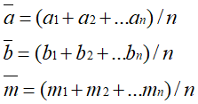
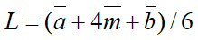
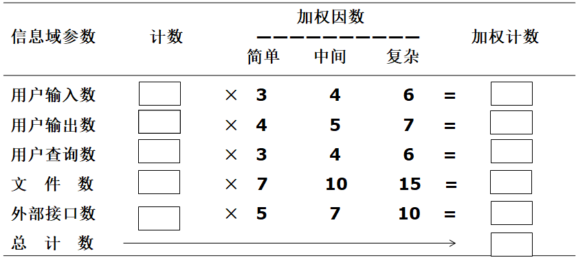
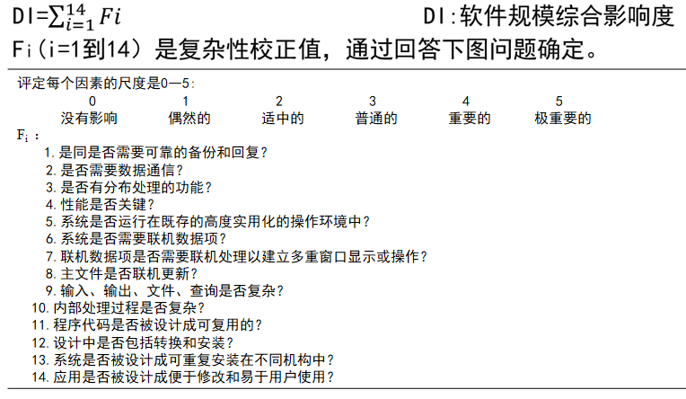
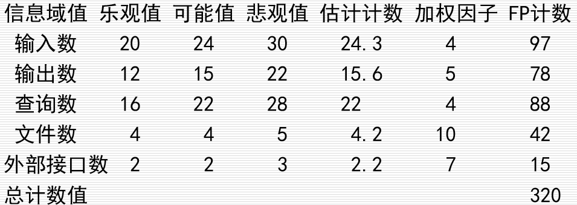
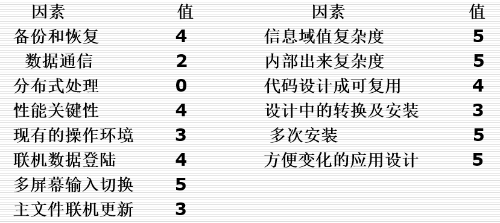

常用方法：代码行技术、功能点技术
1.代码行技术
- 估计每个功能需要源代码（参考类似项目的历史数据）；
- 累计；
- 估计整个软件源程序行数。
当程序较小时常用的单位是代码行数（LOC），
当程序较大时常用的单位是千行代码数（KLOC）。
1.1具体方法
- 多名（n）有经验软件工程师估计；a：程序最小规模；b:程序最大规模；m:程序最可能规模
- 求三种规模的平均值

- 求程序规模

1.2示例
某CAD软件功能如下，通过代码行技术估算开发软件工作量。
- 用户界面及控制设施
- 二维几何分析
- 三维几何分析
- 数据库管理（所有几何数据和支持信息保存在其中）
- 计算机图形显示设施
- 外设控制功能（鼠标、激光打印机和绘图仪等）
- 设计分析模块
估算出每个功能所需代码行数，求平均。
如三维几何分析功能代码行估算范围：平均最小4600行、平均最大8600行、平均最可能6900行
L=（4600+4*6900+8600）/6=6800行
其他功能估算方法类似，如下所示。
1.3优点
代码是所有软件开发项目都有的“产品”，而且很容易计算代码行数。
1.4缺点
源程序不等于软件；实现语言不同代码行数不同；不适用非过程语言
2.功能点技术
2.1概念
依据软件信息域特性和软件复杂性评估结果估算软件规模。
信息域特性：
- 用户输入数：各用户面向不同应用的输入数据计数。
- 用户输出数：为用户提供面向应用的输出信息。
- 用户查询数：即是一次联机输入，以输出方式产生某种即时响应。
- 文件数：每一个逻辑主文件都应计数。
- 外部接口数：所有将信息传到另一系统中的机器可读写接口。
2.2步骤
（1）估算未调整功能点UFP

（2）计算技术复杂因子

（3）计算功能点数FP
功能点数与所用编程语言无关，比代码行合理。但主观因素过多。
2.3示例
以CAD软件为例
（1）估算未调整功能点UFP

估计计数=（乐观值+4 x 可观值+悲观值）/6
输入数24.3=（20+24*4+30）/6
（2）计算技术复杂性因子

D1=52
TCF=0.65+0.01×52=1.17
（3）计算功能点数
FP=UFP×TCF=320×1.17=375